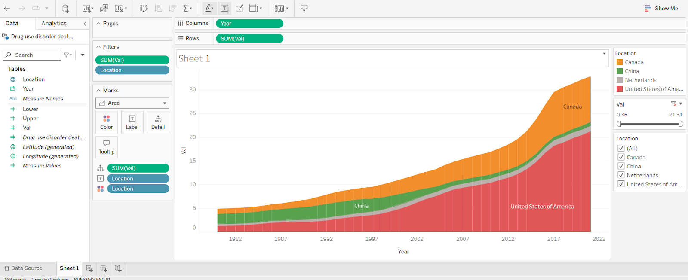
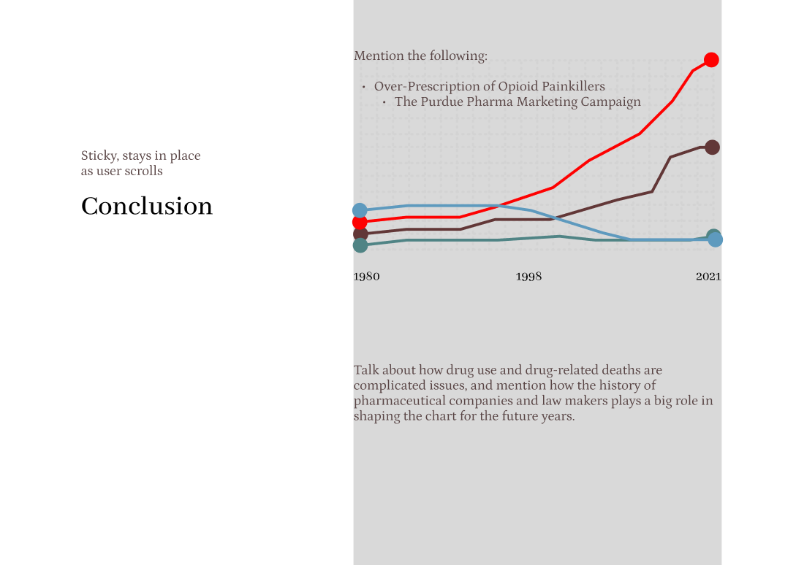
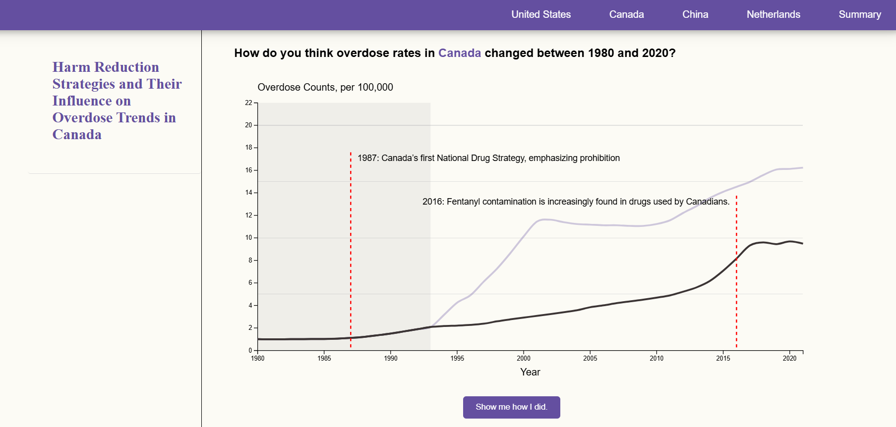

Overdose Deaths and Drug Policies
A comparative data storytelling project using D3.js
Project Overview
This interactive data visualization explores overdose death trends and drug policy shifts across four countries—Canada, USA, China, and the Netherlands—from 1980 to 2021. Using a “YouDrawIt” format, we aimed to engage users in predicting trends before revealing real data, encouraging deeper reflection on how legislation impacts public health.
Process Analysis & Design
We began by gathering data from credible government sources and experimenting with different visualization styles to identify the clearest way to present the information.

Initial trend graph format exploration using D3.
After testing various options, we found line charts to be the clearest for comparing trends. To make the visualizations more engaging and insightful, we developed an interactive “You Draw It” feature that lets users sketch their own predictions before revealing the actual data alongside policy markers.
These interactive charts, designed in Figma and built with Vega-Lite and D3.js, effectively communicate overdose trends while encouraging user engagement and exploration.

Initial wireframe site showing line graphs for overdose trends.
Challenges & Solutions
Due to inconsistent and fragmented city-level data from the 1980s to the 2020s, we adjusted our original approach. After further research, we shifted the project focus to a country-level analysis and narrowed the timeframe to ensure consistency across all four countries. This change allowed us to work with more complete datasets and draw clearer comparisons between regions.
Building the “You Draw It” interaction in D3 came with its own challenges. The original version required users to draw the entire timeline, which some testers found confusing and overwhelming. To improve usability, we limited the drawing section to begin in 1993, giving users a clear starting point and allowing them to focus their predictions on later years. To avoid clutter, we chose to reveal policy markers only after the user completed their prediction and saw the actual data. Red dotted lines then appear to indicate when each policy was passed, helping users draw stronger correlations between legislation and trends.

The “YouDrawIt” feature invites users to guess trends before revealing actual data.
Impact & Outcome
This project taught me how to combine storytelling, interactivity, and public health data to create more meaningful user engagement. I deepened my skills in D3.js, especially with custom SVG path manipulation and data-driven transitions.
Feedback from the course instructor was highly positive as it highlighted how the interactive format increased curiosity and understanding. This reinforced my belief that well-designed data experiences can drive public awareness and learning in ways that static charts cannot (learning through a form of play).